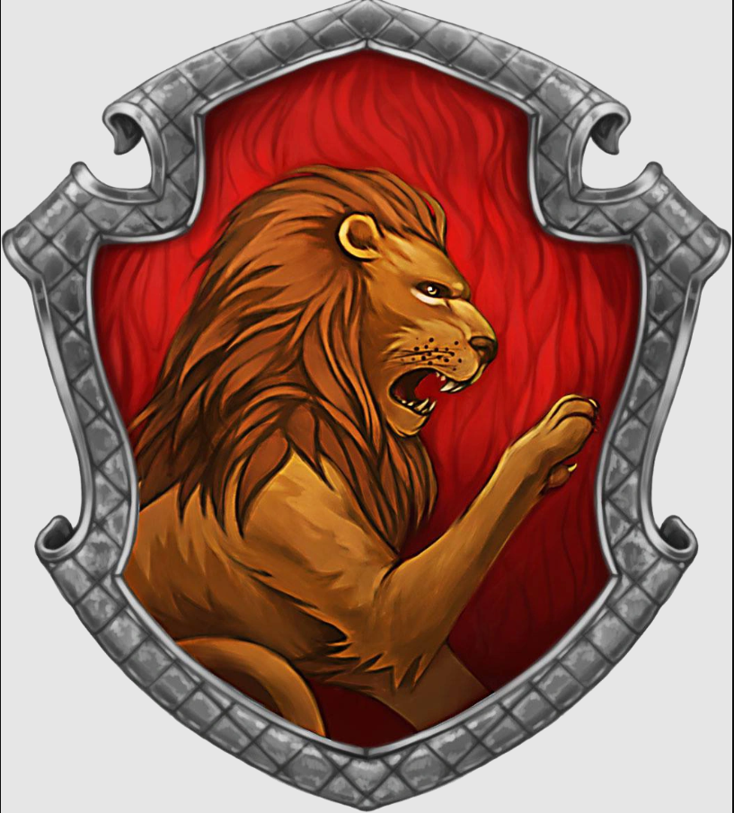

Nodebucket is a new way to keep track of your to do list. It’s easy, simple, straight forward, and secure. No more forgetting what’s on your plate for the day, simply log into your Nodebucket and in an instant you’ll be presented with a simplified interface showing your to do and done tasks. Tasks can be easily prioritized by simply dragging and dropping on the list. Once tasks are complete, drag them to the Done column. For permanent removal, simply click on the delete icon to remove them from the list. Logout to save your workspace.
For Nodebucket, simplicity is the key. No more complex begin and start times. No more confusing drop downs or obscure tasks categorizations. Just type in something you want to remember to do (3-35 characters), hit the + sign and your task is magically added to the To Do column. It’s just like writing it down on a piece of paper, only you won’t accidentally leave Nodebucket laying in the cart on your last trip to the grocery store.
Nodebucket is designed just as much for the busy, on the go professional as it for the frustrated housewife. Kids can keep track of their school assignments. Important business people can keep track of their contacts. Crypto traders can keep track of…..whatever it is they do. Everyone can use it!
Make sure stop by our Patreon page www.patreon/nodebucket.com for more information on this wonderful application. You can read about exciting future enhancements planned for Nodebucket, such as the ability to edit task descriptions in your to do list. If you like Nodebucket, why not donate? Your money will be going to a good cause, supplying beer funds for aspiring and up and coming web developers. As you can tell by the design of this About page, many, many funds are needed!!
Thanks from your Nodebucket team!!